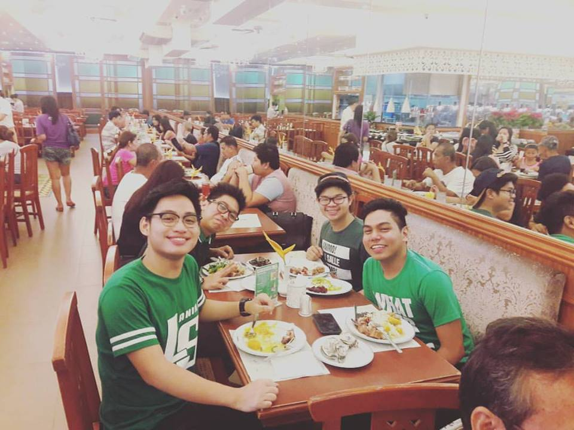

My mother is a hardworking person, she always goes to work in Department of Justice (DOJ) and do a lot of works, example is she has three bosses, because their office currently lacking with secretaries. She amazed me because of how she can manage that kind of job and still making household chores like cooking for our dinner. She is also a thrifty and “know how to manage money” person. She always spent her money in what we need than what we want and she can save big amount of money without cutting the amount of other needs like foods. Lastly, because I can’t even say her characteristics that I always admire, she is a loving person. She always took care of us first even when she is having cold or fever, giving us what we need, and sometimes what we want before her own needs and wants and I can feel her love for us with her sacrifices for us. And because of her, I always took what I need before what I want because I realized that what you want will make you happy but will not last, but what you need will give you the happiness that will lasts. I always think of other people, especially the important people in my life, before myself and I am a caring person because of her. That’s why I love myMother forever.
My High School friends, these persons are always there when you need them. They were the one who thought me that some friendships last and they will never leave you when you are having a bad time. I learned that true friends are there and it doesn’t matter if you are in good or bad situation and made me realized that friendship is a precious thing in this world. Therefore, I also do it with my college friends, I want out friendship to last longer and hopefully until we get old.
 My college friends,these persons are hardworking students,we study hard and if we have a group project or research paper, we are the one who always finishing the task earlier than my fellow block mates. We are also competitive, not the kind where we want others to fail, but we want to excel and have good competitions with them. We are also doing tasks neat and want them to be perfect as they can. Because of them, now I do works with all I got and give efforts to it. Also, I always work hard and study hard in school where I never did in High School. Like what I said before, I had an experience where I’m going to fail in a class but because of these persons, I study hard and work hard for my grades and I successfully passed that class.
My Special Someone,we met in DLSU-D, and we are both taking BS-Psychology. We always see each other in the gymnasium, but we stare at each other. Then I message her in twitter, we talk and become friends and that's it, I confessed to her that I like her and she said that she like me too. I'm thankful to God because I met her, she pushes me to become better everyday, she makes me happy in my down moments and most importantly, she made me realized that life is worth living, every moment, every second. Hopefully, she's the one.
Copyright© 2017 Wilfred Magsakay. All Rights Reserved.